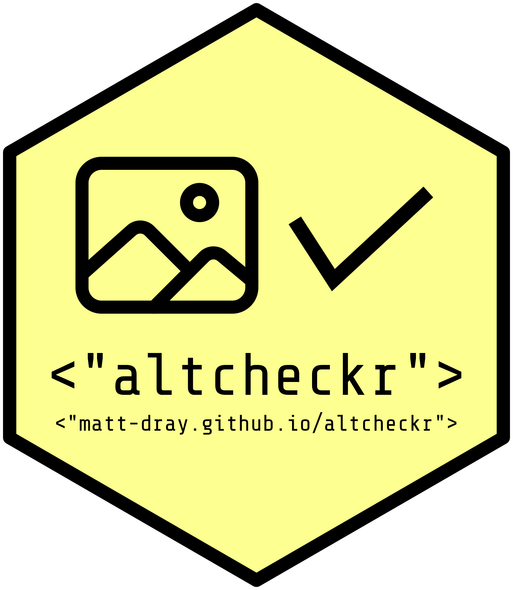
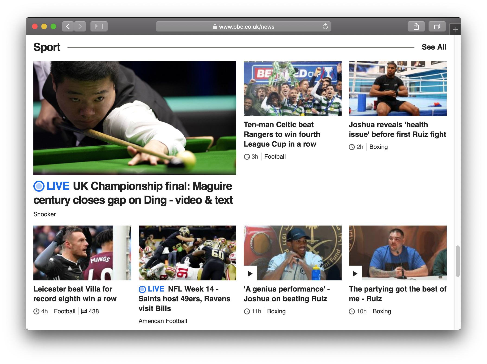
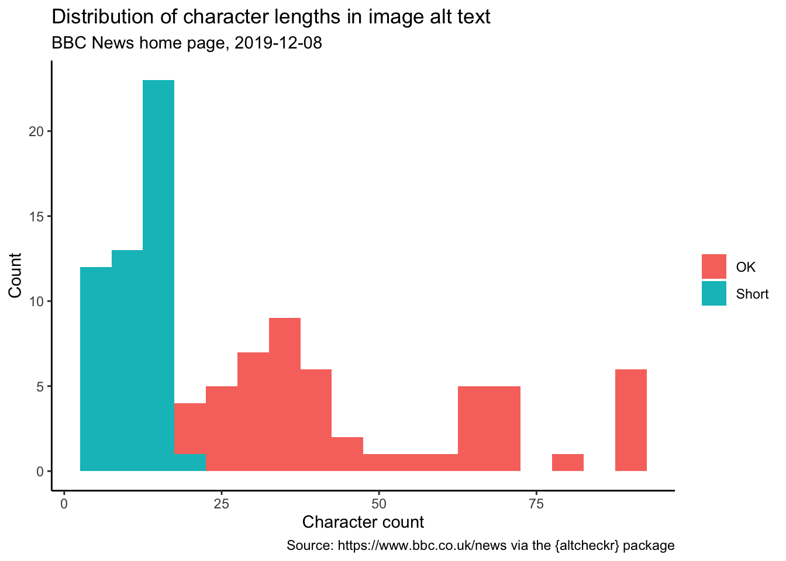
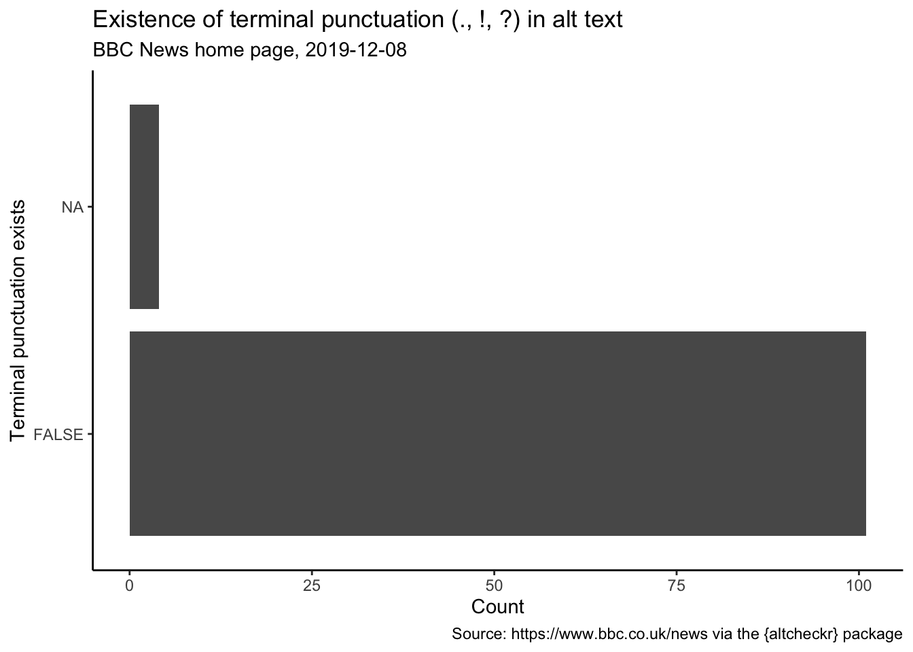

install.packages("remotes") # if not yet installed
install_github("matt-dray/altcheckr")
library(altcheckr)
tl;dr
I’ve made a small concept R package called {altcheckr} that checks the accessibility of images on web pages. It has functions that (1) scrape attributes from HTML elements on a web page and (2) apply simple rules to indicate the suitability of the alt text provided.
Accessibility
A web site is accessible if everyone can engage with its content. There are Web Content Accessibility Guidelines (WCAG) from the World Wide Web Consortium (W3C) to help achieve this and many (often free) tools for checking accessibility issues. It’s pressing because the law in the UK has recently changed to ensure that all public sector websites publish an accessibility statement.
One obvious target for improvement is accessibility of images.
Screen readers
Screen readers are a technology that parse text on a web page and output it as speech audio. They’re particularly helpful for blind and partially-sighted people.
Images are declared in the HTML code of a website with the <img> element. Like other HTML tags, it can have many ‘attributes’: the source of the image (where the image is actually hosted), the height and width of the image, and so on.
The ‘alt’ attribute provides alternative text that describes the image. This text won’t be visible to people visiting the page (unless you right-click and ‘inspect’ the HTML for the page), but will be picked up screen readers.
When and what to write
What should you actually write as alternative text for an image? It depends on the type of image. To summarise the alt decision tree by W3C:
| Image type | Alt text suggestion |
|---|---|
| Informative | A short, complete, descriptive sentence. |
| Decorative | None required (alt = ""). |
| Functional | A short description of the purpose served (if it’s a button, for example). |
| Contains text | Text should be repeated unless in the main body text. |
| Complex | Describe in the main body text or provide a longdesc attribute that links to a page containing a longer description. |
Chancellor of the {altcheckr}
I’ve been writing different sorts of R packages recently (see posts on {usethis}, {kevinbacran}, {blogsnip} and {gdstheme}) and I’ve have also written briefly on accessibility and some related tools.
To this end, I’ve written a small R package called {altcheckr} to help assess alt text programmatically. Go to the source on GitHub or see the site built with {pkgdown}.
Note that {altcheckr} isn’t intended to provide a definitive evaluation of alt text. It uses simple heuristics and doesn’t contain everything that could be checked. I’m not an expert and the package isn’t user tested.
It has only two functions for now:
alt_get()scrapes the web page at a URL provided by the user and outputs a data frame where each row is an image and each column is an HTML attributealt_check()takes the output fromalt_get()and adds a series of columns that assess features of the alt text, like its length
It also contains the example_get data set, which is a dummy output from alt_get() to be used to experiment with alt_check().
Example
Let’s walk through how you can get the package, fetch alt text from a webpage and then assess it.
Install
You can get the package from GitHub with:
alt_get()
The alt_get() function makes use of {polite}, {xml2} and {rvest} to scrape a web page and isolate attributes from its <img> elements. If {polite} determines that it’s okay to scrape, alt_get() returns a tibble after some {purrr} wrangling, where each row is an image. You can choose to retain all scraped attributes as columns, or it defaults to returning just src and alt (longdesc too if it exists).
We’ll use the BBC News home page as our example. A popular site with constantly-updating content that you would expect to have good alt text.

BBC News sports section. How would you describe these images in alt text?
Pass the web page’s URL to alt_get() to return a tibble where each row is an image from the page and there are columns for the image source (src) and alt text (alt).
bbc_get <- alt_get("https://www.bbc.co.uk/news")
str(bbc_get)Classes 'tbl_df', 'tbl' and 'data.frame': 105 obs. of 2 variables:
$ src: chr "https://a1.api.bbc.co.uk/hit.xiti?&col=1&from=p&ptag=js&s=598253&p=unknown&x1=[urn:bbc:cps:b5c53243-a695-e059-e"| __truncated__ "https://ichef.bbci.co.uk/news/320/cpsprodpb/14E0/production/_98244350_pa.jpg" "data:image/gif;base64,R0lGODlhAQABAIAAAAAAAP///yH5BAEAAAAALAAAAAABAAEAAAIBRAA7" "data:image/gif;base64,R0lGODlhAQABAIAAAAAAAP///yH5BAEAAAAALAAAAAABAAEAAAIBRAA7" ...
$ alt: chr "" "The Irish border" "Airman Mohammad Sameh Haitham (left) and ensign Joshua Kaleb Watson" "Crowds" ...A whopping 105 images! Let’s take a look at the first few alt text entries.
head(bbc_get$alt)[1] ""
[2] "The Irish border"
[3] "Airman Mohammad Sameh Haitham (left) and ensign Joshua Kaleb Watson"
[4] "Crowds"
[5] "Wellingborough Road, Rushden"
[6] "Juice Wrld, real name Jarad Anthony Higgins, was considered to be a rising star of rap music"Some of these seem quite short and aren’t particularly descriptive; even without having seen the images that they relate to. Let’s do a simple assessment of the alt text using the alt_check() function to provide a bit more information.
alt_check()
The alt_check() function takes the output from alt_get() and generates some new variables based on the alt text.
bbc_check <- alt_check(bbc_get)
packagelibrary(dplyr)
glimpse(bbc_check)Observations: 105
Variables: 10
$ src <chr> "https://a1.api.bbc.co.uk/hit.xiti?&col=1&from=p&…
$ alt <chr> "", "The Irish border", "Airman Mohammad Sameh Ha…
$ alt_exists <chr> "Empty", "Exists", "Exists", "Exists", "Exists", …
$ nchar_count <int> NA, 16, 67, 6, 28, 92, 37, 16, 14, 38, 4, 10, 26,…
$ nchar_assess <chr> NA, "Short", "OK", "Short", "OK", "OK", "OK", "Sh…
$ file_ext <lgl> NA, FALSE, FALSE, FALSE, FALSE, FALSE, FALSE, FAL…
$ self_evident <lgl> NA, FALSE, FALSE, FALSE, FALSE, FALSE, FALSE, FAL…
$ terminal_punct <lgl> NA, FALSE, FALSE, FALSE, FALSE, FALSE, FALSE, FAL…
$ spellcheck <list> [<>, <>, <"Sameh", "Haitham", "Kaleb">, <>, <"We…
$ not_basic <list> [<>, <"irish", "border">, <"airman", "mohammad",…You can see a number of new columns in addition to src and alt that were output from alt_get(). These are as follows, with reasoning:
| Column name | What | Why |
|---|---|---|
alt_exists |
Has alt text been provided? | A lack of alt text could be a problem, though it’s acceptable if the image is decorative. |
nchar_count |
Number of characters in the alt text. | Used in nchar_assess |
nchar_assess |
Categorical. Whether the alt text is ‘short’ (defaults to 20 characters), ‘long’ (125) or ‘okay’. | Short alt text might not describe the image well, but is acceptable for things like buttons, for example. Long alt text might be too verbose and should probably put in a longdesc attribute. |
file_ext |
Logical. Does the alt text appear to be a file name? | Alt text shouldn’t contain a file name. |
self_evident |
Logical. Does the alt text contain redundant phrases? | It doesn’t need to say ‘a picture showing…’ or similar. |
terminal_punct |
Logical. Does the alt text end in terminal punctuation? | The alt text should end in a sentence terminator, like a full stop. This means the screen reader will parse it as a proper sentence. |
spellcheck |
A listcol of character vectors detailing misspelled words according to hunspell from the {hunspell} package. |
Errors in spelling may result in the screen reader misreading a word. |
not_basic |
A listcol of character vectors that aren’t in Charles Kay Ogden’s Basic English list. | Text is more accessible in general if it uses simple English. |
I’d like to hear your thoughts on these variables and if you’d like to suggest others. Contributions to the GitHub repository are very welcome.
Interpret the data
You can take the output from alt_check() and investigate further. Here’s two very simple and plainly-presented examples.
Let’s look first at the length of the alt text. This histogram shows the distribution of character counts coloured by the nchar_assess variable, giving different colours to alt text that’s under 20 (‘short’) or over 125 (‘long’) characters.
library(ggplot2)
bbc_check %>%
ggplot(aes(nchar_count)) +
geom_histogram(
aes(fill = nchar_assess),
binwidth = 5,
na.rm = TRUE
) +
labs(
title = "Distribution of character lengths in image alt text",
subtitle = paste("BBC News home page,", Sys.Date()),
caption = "Source: https://www.bbc.co.uk/news via the {altcheckr} package",
x = "Character count", y = "Count"
) + theme_classic() + theme(legend.title = element_blank())
So you can there’s see a lot of short alt text that might need looking at if the images are meant to be informative. For example, here’s the 10 shortest:
bbc_check %>%
filter(nchar_count < 20) %>%
arrange(nchar_count) %>%
distinct(alt, nchar_count) %>%
slice(1:10)# A tibble: 10 x 2
alt nchar_count
<chr> <int>
1 Fred 4
2 Santa 5
3 Crowds 6
4 Celeste 7
5 Pork pie 8
6 Liam Payne 10
7 quiz promo 10
8 Tie fighter 11
9 Jamie Vardy 11
10 Emma Spencer 12Next: how does the alt text of images make use of terminal punctuation (period, exclamation point or question mark)?
bbc_check %>%
group_by(terminal_punct) %>%
summarise(Count = n()) %>% # count within the variable
ggplot(aes(x = terminal_punct, y = Count)) +
geom_bar(stat = "identity") +
labs(
title = "Existence of terminal punctuation (., !, ?) in alt text",
subtitle = paste("BBC News home page,", Sys.Date()),
caption = "Source: https://www.bbc.co.uk/news via the {altcheckr} package",
x = "Terminal punctuation exists",
y = "Count"
) + theme_classic() +
coord_flip() +
theme_classic()
So most of the alt text does not end in terminal punctuation (FALSE), which is a bit disappointing. This means a screen reader might not fully parse the image as a complete sentence.
Note that the findings here aren’t definitive and each case would need to be looked further into. However, these very shallow analyses imply that there are some improvements to make.
Next steps
There’s a number of alt_check() additions that could be developed. For example:
- optical character recognition (OCR) to decide whether an image has text in it, and to possibly extract it
- guess the type of image based on its attributes and derived variables (a functional image might have relatively small height and width attributes, for example)
- assess the text in the link provided by the
longdescattribute, if it exists - detect ‘link stuffing’, where alt text is filed with keywords for purposes of search engine optimisation
And of course: better unit testing and test coverage, simplifying the dependencies (there’s lots) and making the code more efficient. Tell me about other things that can be improved.
Ultimately, my call to action for R users is to explore the wealth of materials for package development1 and for everyone to take a moment to think about your users and the accessibility of whatever you’re producing.
Environment
Session info
Last rendered: 2023-07-23 11:06:21 BSTR version 4.3.1 (2023-06-16)
Platform: aarch64-apple-darwin20 (64-bit)
Running under: macOS Ventura 13.2.1
Matrix products: default
BLAS: /Library/Frameworks/R.framework/Versions/4.3-arm64/Resources/lib/libRblas.0.dylib
LAPACK: /Library/Frameworks/R.framework/Versions/4.3-arm64/Resources/lib/libRlapack.dylib; LAPACK version 3.11.0
locale:
[1] en_US.UTF-8/en_US.UTF-8/en_US.UTF-8/C/en_US.UTF-8/en_US.UTF-8
time zone: Europe/London
tzcode source: internal
attached base packages:
[1] stats graphics grDevices utils datasets methods base
other attached packages:
[1] altcheckr_0.1.0
loaded via a namespace (and not attached):
[1] htmlwidgets_1.6.2 compiler_4.3.1 fastmap_1.1.1 cli_3.6.1
[5] tools_4.3.1 htmltools_0.5.5 rstudioapi_0.15.0 yaml_2.3.7
[9] rmarkdown_2.23 knitr_1.43.1 jsonlite_1.8.7 xfun_0.39
[13] digest_0.6.33 rlang_1.1.1 evaluate_0.21 Reuse
CC BY-NC-SA 4.0